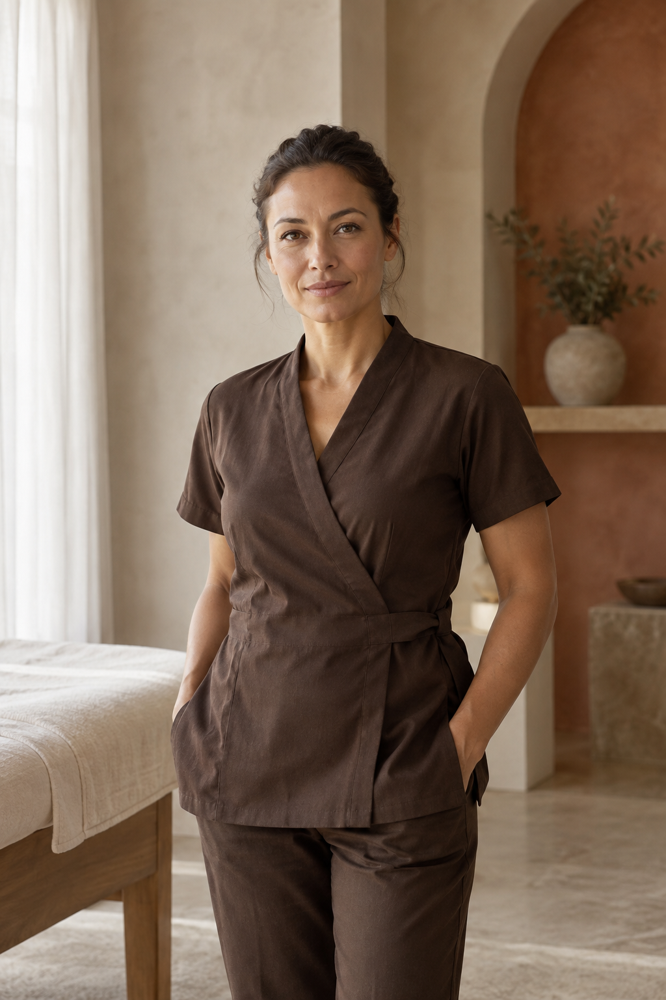
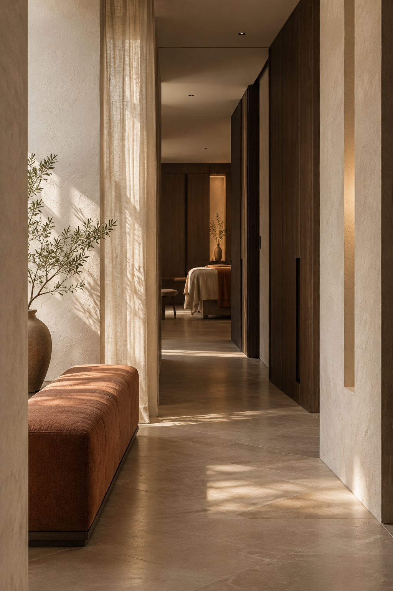
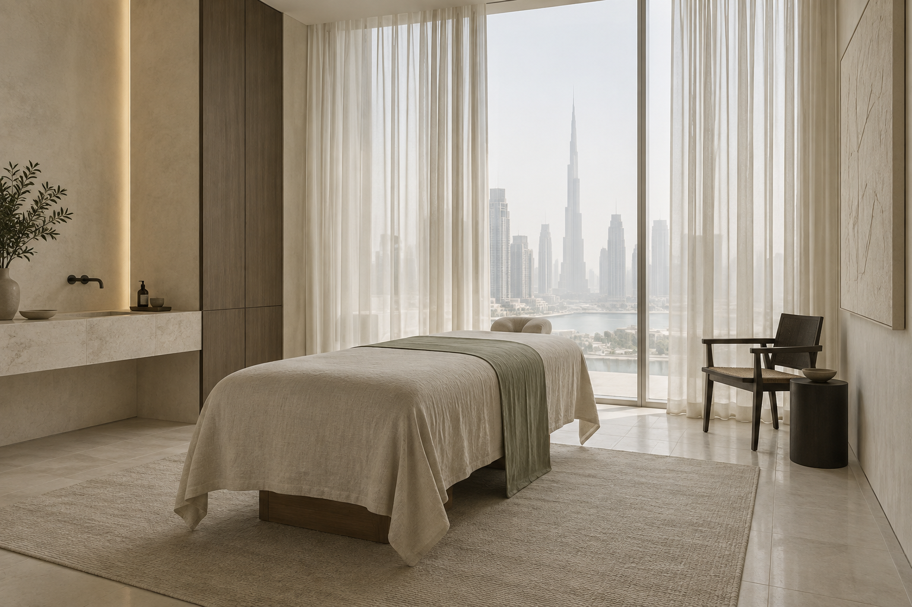

Массаж
спины
Бережная работа с напряжением и ощущением свободы в движении.

В основе каждого сеанса — внимание к вашему состоянию, движению и тому, как вы хотите себя чувствовать.
Бережная работа с напряжением и ощущением свободы в движении.
Время, чтобы замедлиться, восстановить силы и вернуться к себе.
Работа с телом после нагрузки, с учётом вашего ритма и целей.
Не существует одного сценария для всех. Мы выстраиваем работу вокруг вас — спокойно, точно и без спешки.
Разговор о самочувствии и привычном движении помогает выбрать верный подход.
Техника и знание тела соединяются с вниманием к вашему отклику.
Приватная атмосфера и комфортный темп становятся частью восстановления.
Опыт специалиста чувствуется в точности рук. Человеческое внимание — в том, как он слушает.


Демонстрационные образы · состав команды и данные специалистов уточняются
“«Я почувствовал, что моё тело действительно услышали. Движение снова стало лёгким».
Чистые линии, мягкий свет и ощущение приватности. Пространство, в котором можно полностью сосредоточиться на себе.



Изображения передают направление атмосферы и не подтверждают фактический интерьер студии.
Самое важное перед первым сеансом — коротко и по делу.
Расскажите, что вас беспокоит и какой результат вы ожидаете. Мы поможем выбрать подходящее направление.
Специальная подготовка не нужна. Приходите немного раньше, чтобы спокойно обсудить ваше состояние.
Продолжительность зависит от выбранной программы. Мы уточним детали при записи.
Свяжитесь с нами заранее, и мы предложим другое доступное время.
Оставьте контакты и несколько деталей. Мы свяжемся с вами, уточним запрос и подберём удобное время.